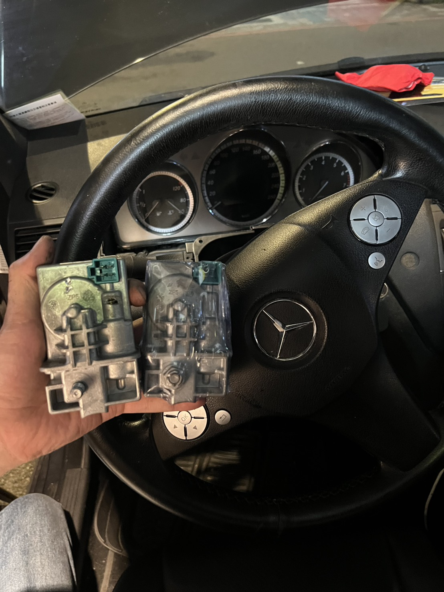
電子方向盤鎖故障
Mercedes-Benz W204
鑰匙可轉動但儀表無法正常開啟。更換原廠改良型方向盤鎖並完成設定，恢復開電及啟動功能。
CAR KEY · IMMOBILIZER · ECU
提供晶片鑰匙複製、鑰匙全數遺失再生、機械與電子鎖頭維修，以及防盜電腦、引擎電腦維修更換。
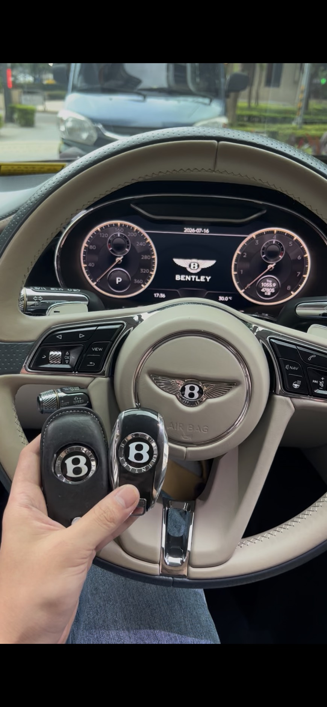
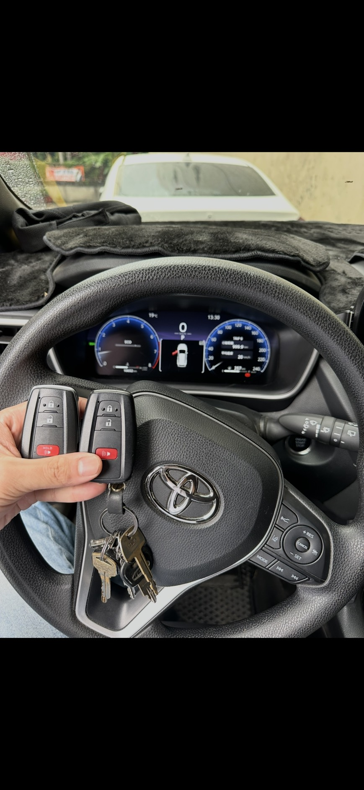
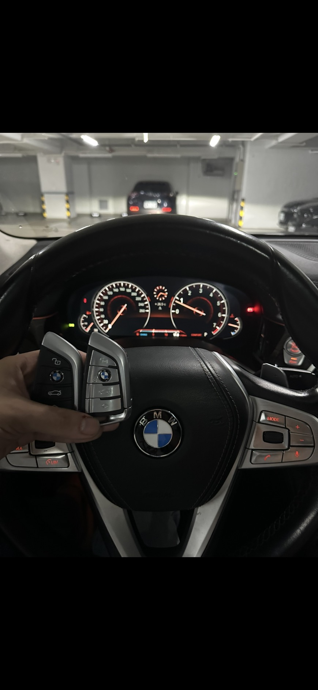
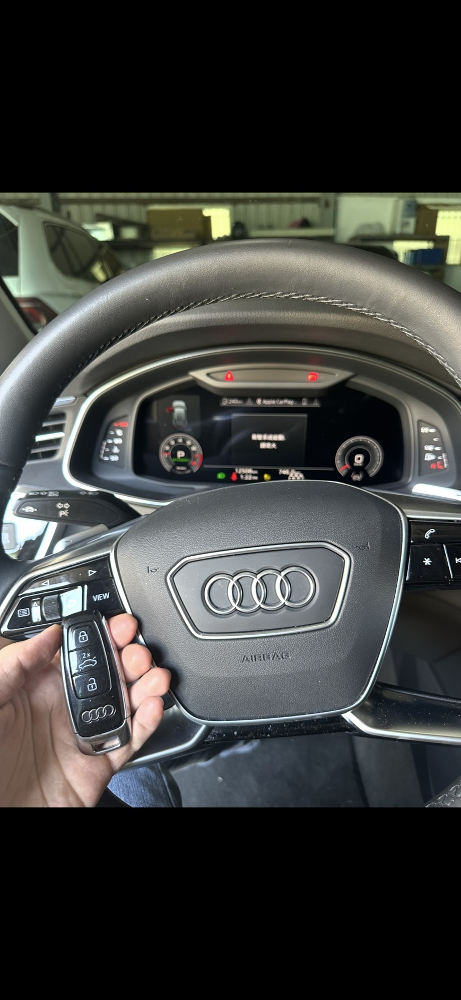
OUR SERVICES
依車型、年份與實際狀況評估，提供合適的製作、維修及資料設定服務。
晶片鑰匙、汽車遙控器及智能感應鑰匙複製。一般建議預約工作室施工，車輛需開來進行設定及測試。
查看施工案例 ↓ 02車上已無任何可用鑰匙，可依車型重新製作並完成防盜匹配。施工前須核對車主身分、車輛資料及合法授權。
查看施工案例 ↓ 03處理車門鎖、引擎鎖故障，以及鎖頭可以轉動但無法開啟等問題；亦可評估將不同鎖頭修改為使用同一把鑰匙。
查看施工案例 ↓ 04處理電子點火鎖、電子方向盤鎖故障、鑰匙無法辨識、無法開電或無法啟動等問題。
查看施工案例 ↓ 05防盜系統異常、鑰匙授權失敗或相關控制模組故障，可進行檢測、維修、更換及資料設定。
查看施工案例 ↓ 06提供引擎電腦檢測、維修、更換及資料設定。車輛抖動、缺缸或失火，排除機械問題後仍故障，可進一步測試引擎電腦。
查看施工案例 ↓不確定您的狀況適合哪一項服務？先提供車輛資料，我們協助初步確認。
REAL WORKS
真實車輛、真實案件，從鑰匙製作到控制模組故障處理。
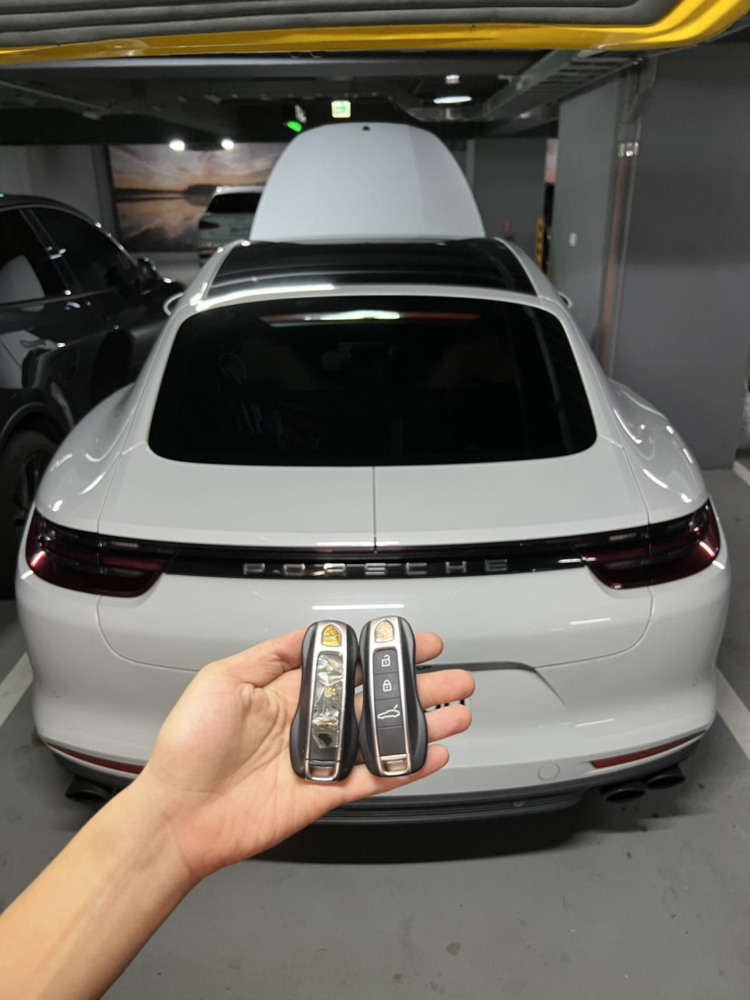
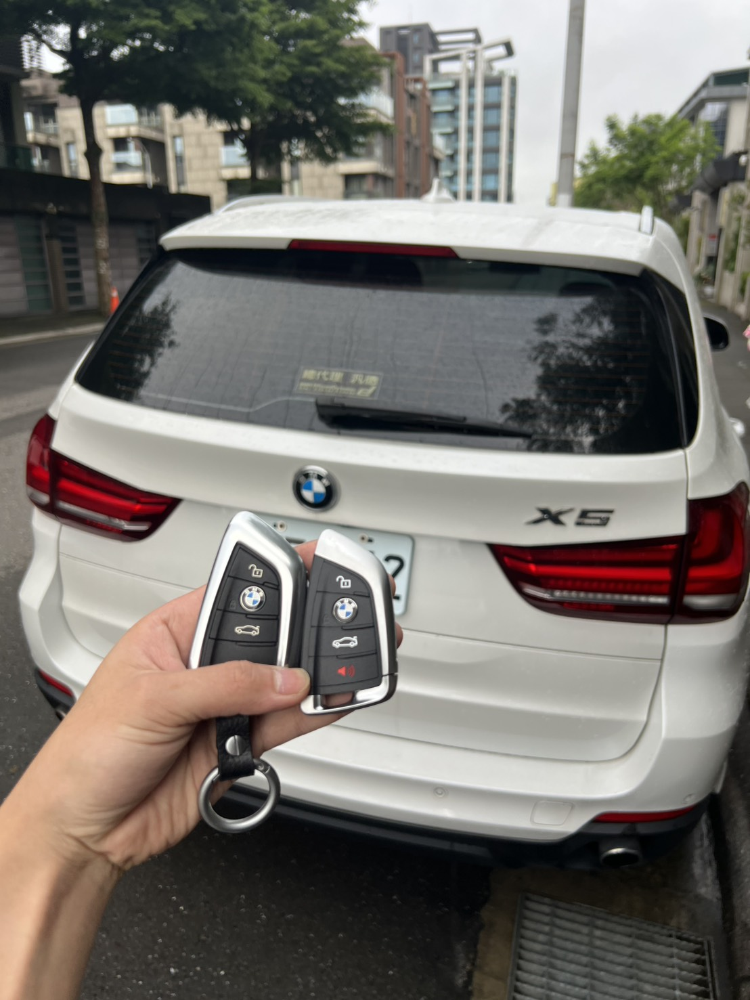
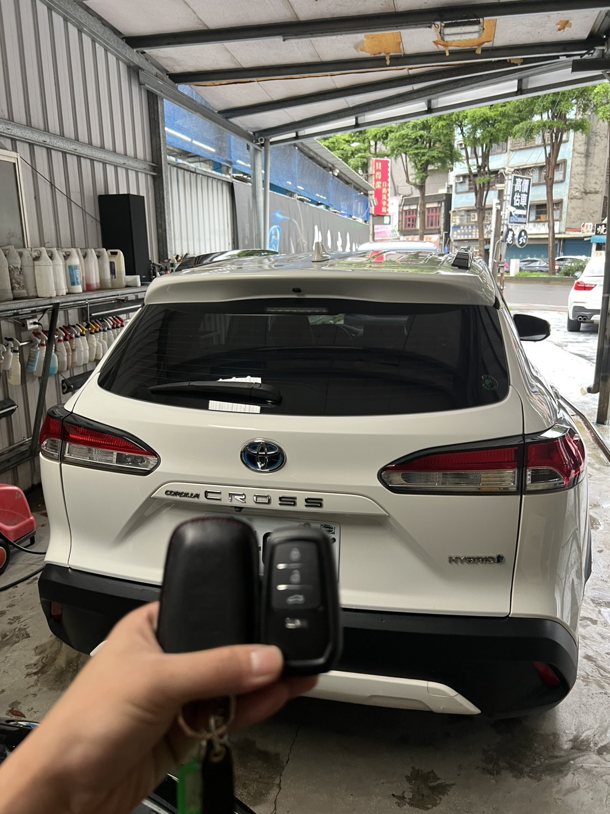
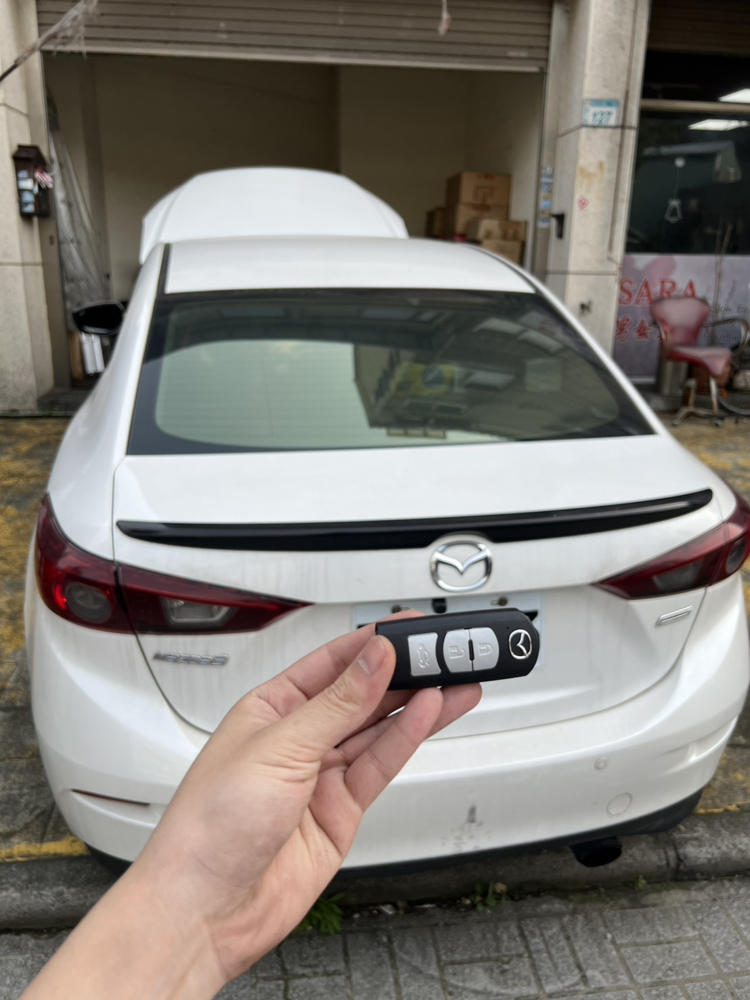

鑰匙可轉動但儀表無法正常開啟。更換原廠改良型方向盤鎖並完成設定，恢復開電及啟動功能。
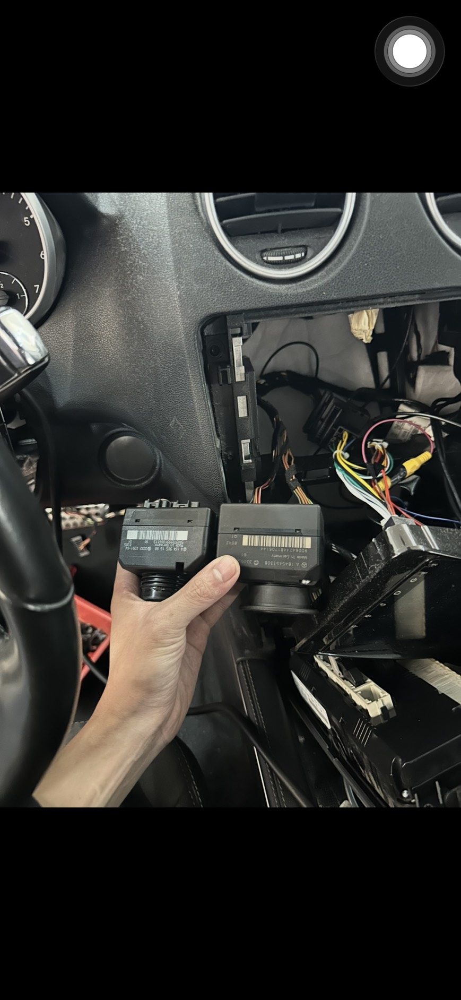
電子鎖頭故障造成車輛無法啟動，完成故障處理與相關功能確認。
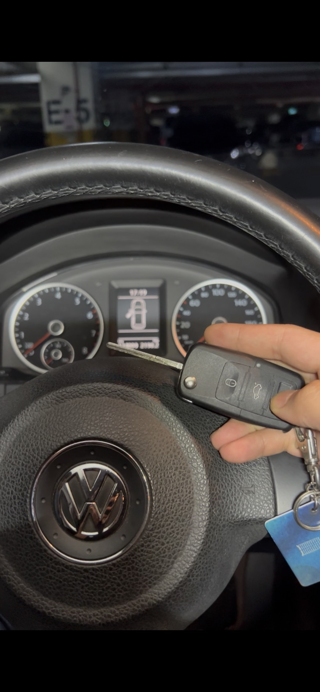
鑰匙插入後鎖頭卡死無法轉動。維修原車點火鎖頭，恢復正常轉動、開電及啟動功能。
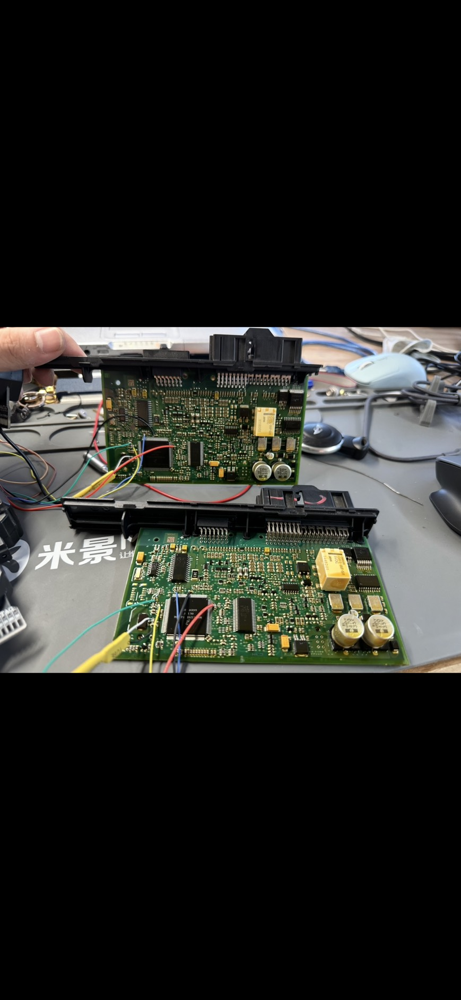
確認 CAS 模組內部故障，更換 CAS 並完成相關資料處理與功能測試。
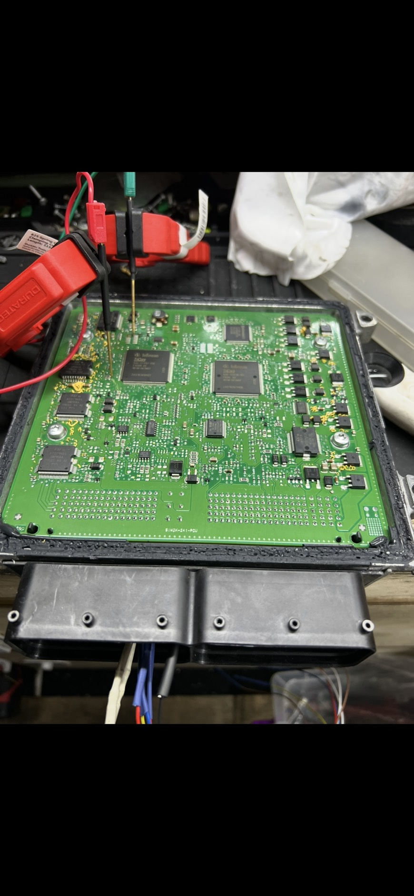
防盜系統異常導致引擎電腦無法授權，完成故障處理與資料設定，恢復正常啟動。
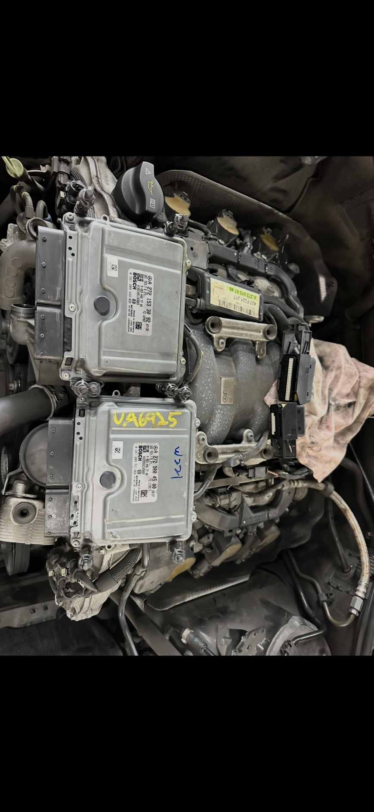
確認引擎電腦內部故障，更換外匯拆車引擎電腦並完成相關資料設定。
您的車輛也有類似狀況？提供車型、年份與照片或影片，方便初步了解。
SUPPORTED BRANDS
Mercedes-Benz
BMW
MINI
Audi
Volkswagen
Porsche
Škoda
Volvo
Jaguar
Land-Rover
Bentley
Maserati
Toyota
Lexus
Honda
Nissan
Mazda
Subaru
Suzuki
Ford
Hyundai
Kia
各品牌因年份、車型及防盜系統不同，服務內容須依實際車輛資料確認。未列出的品牌亦可提供車型及年份個別詢問。
SERVICE MODE
依服務內容、車型及車輛狀況，安排合適的施工方式。
主要承接台北市、新北市及桃園市案件，其他地區亦可提供案件資料個別詢問，是否承接將依案件內容與距離評估。
LEGAL AUTHORIZATION
汽車鑰匙、防盜系統及鎖頭服務涉及車輛安全，施工前須核對車輛資料與合法授權。
資料僅用於確認案件合法性、施工授權、案件紀錄及必要的爭議處理，並於必要期間內妥善留存，不作行銷或其他無關用途。
FAQ
施工前最常遇到的問題，先為您整理在這裡。
一般約需 20～60 分鐘，實際時間會依車輛品牌、車型、年份、鑰匙種類及設定方式而有所不同。部分特殊車型可能需要較長的處理時間。
需要。汽車晶片鑰匙及智能鑰匙通常必須配合車輛進行設定，完成後也需要實際測試開鎖、上鎖、感應及啟動功能。一般建議提前預約，並將車輛開至工作室施工。
可以。多數車型即使鑰匙全部遺失，仍可依車輛防盜系統及車籍資料重新製作與設定鑰匙。施工前須核對車主身分、車輛資料及合法授權。
可以評估。鑰匙全數遺失、車輛無法移動或其他需要現場處理的案件，可依車型、車輛所在地、案件內容及當日行程評估到場服務。一般鑰匙複製建議預約工作室施工。
提供國產、日系、韓系及歐系車輛的汽車晶片鑰匙、遙控器、智能鑰匙、防盜系統與相關維修服務。不同年份及車型使用的系統不同，仍須依實際車型與案件內容確認。
請提供車輛品牌、車型、出廠年份、目前是否還有可用鑰匙、車輛啟動方式、車輛所在地及需要處理的問題。如有鑰匙或故障情況，請一併提供照片或影片。
可以先提供車型、年份及故障照片或影片，方便初步了解。照片或影片僅能作為初步判斷，實際故障原因及處理方式仍須依車輛檢測結果確認。
需要。工作室採預約制，前往前請先透過電話或 LINE 聯絡，確認車型、服務內容及預約時間。
APPOINTMENT ONLY
一般鑰匙複製建議預約工作室施工，車輛需開來進行設定及測試。前往前請先聯絡，確認車型、服務內容及預約時間。